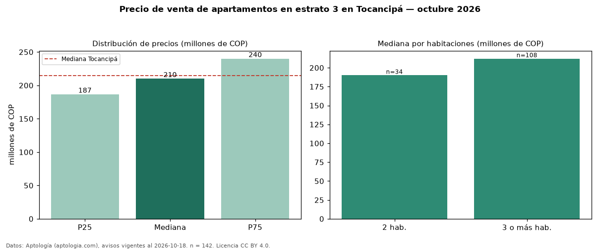

Precio de venta de apartamentos en estrato 3 en Tocancipá — octubre 2026
En Tocancipá, la mediana de precio de venta de apartamentos en estrato 3 es COP 210 millones, según 142 avisos vigentes. Prácticamente coincide con la mediana de los apartamentos en venta de Tocancipá (COP 215 millones, n = 266); este segmento reúne el 53 % de esos avisos. Por metro cuadrado, la mediana es COP 3,57 millones/m² (n = 141), 2 % por debajo de los apartamentos en venta de Tocancipá (COP 3,64 millones/m²). El área mediana anunciada es 60 m². El segmento con más oferta es el de 3 o más habitaciones (108 avisos, mediana COP 212 millones); pasar de 2 habitaciones a 3 o más habitaciones cambia la mediana +12 %. La administración mediana declarada es COP 160.500 al mes (n = 112). La mitad central de los avisos va de COP 187 millones a COP 240 millones (razón 1,3), una dispersión baja. Datos: Aptología (aptologia.com), CC BY 4.0 — https://www.aptologia.com/venta/tocancipa. Archivos: PDF, CSV con las cifras y gráfica PNG.

| Avisos únicos | 142 |
|---|---|
| Percentil 25 | COP 186.625.000 |
| Mediana | COP 210.000.000 |
| Percentil 75 | COP 240.000.000 |
| Mediana por m² | COP 3.571.285 |
Fuente: avisos vigentes de portales inmobiliarios recopilados por Aptología, deduplicados (mínimo 30 avisos únicos por celda). Precios pedidos, no cerrados. Fecha: 2026-10-18.